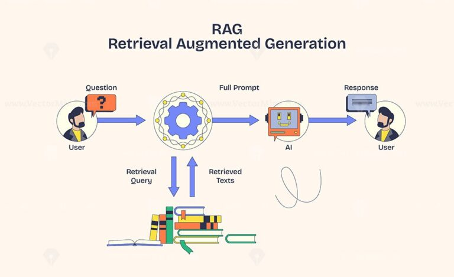
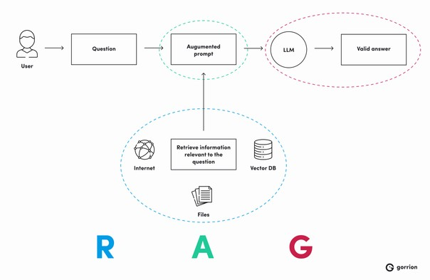

Turning Data into Intelligent Answers
Every day, companies create and store a large amount of data. From emails and reports to documents and dashboards, information is everywhere. But even with so much data available, finding the right information at the right time is still a challenge.
This is where Retrieval-Augmented Generation (RAG) comes in. It helps systems find the right information from available data and give accurate answers. In simple terms, it makes data more useful and helps people get the information they need quickly and easily.

RAG works like a smart helper that checks information before giving an answer. It does not guess. It first looks for the right information and then gives the answer. When you ask a question, it follows a simple process step by step.
First, the system looks into different company data like documents, reports, emails, or databases. It tries to find information that is related to your question. For example, if you ask about sales, it will search in sales reports or related files.
After finding many pieces of information, the system selects only the most useful and relevant data. It ignores unnecessary or unrelated information. This helps in making sure the answer is correct and focused
Now, the system uses the selected information to create a clear and meaningful answer. It explains the answer in a simple way so that the user can understand it easily.

One common use of RAG is in customer support.
When a customer asks something like “What is your return policy?”, the system doesn’t just give a basic or random answer. Instead, it checks the company’s documents, finds the exact information, and then responds with the correct and updated answer.
Doctors and hospitals store large medical records.
RAG helps to:
Search patient history
Find reports
Suggest information
Gives medical summary
1.First, it gives more accurate answers. Since it uses real data, the chances of getting wrong or outdated information are reduced.
2.It also saves time. Instead of searching through many documents, users can simply ask a question and get the answer quickly.
3.Another benefit is that it makes work easier. Employees and customers don’t need to depend on others or go through multiple files to find information.1.One main challenge is data quality. If the data stored in the system is incorrect or outdated, the answers given will also be wrong. So, it is important to keep the data updated and accurate.
2.Another challenge is data security. Since RAG uses company data, it is important to make sure that sensitive information is protected and not shared with the wrong people.
3.setting up RAG in a system can be complex and time-consuming. It requires proper integration with existing data systems, which may take effort and planning.
In the coming years, the way people interact with data is expected to change a lot. Instead of manually searching through multiple documents or systems, users will rely more on intelligent tools that can understand their questions and provide direct answers. RAG will play an important role in this transformation. It will help systems deliver more accurate, relevant, and real-time information by combining data retrieval with intelligent response generation.
Retrieval-Augmented Generation is transforming how organizations interact with data. By combining retrieval and generation, it ensures accurate and meaningful responses. As businesses grow, RAG will become essential in enterprise systems.